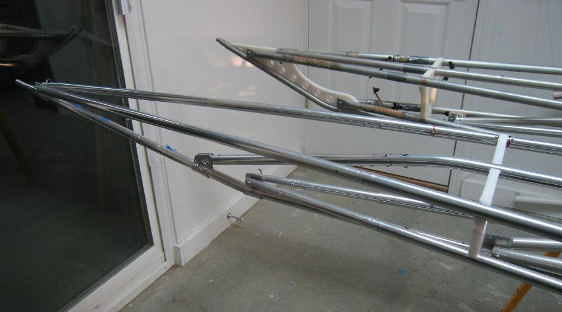

| Sea Glider / Sea Rider Frames | Menu Last Page Next Page |
|
 The Sea Glider and Sea Rider stern details. The Sea Rider uses the older HDPE stem plates, whereas the Sea Glider uses the easier to make and lighter weight aluminum attachment plates. Both boats now use clevis pins / split key rings vs the older machine screws / lock nuts for stringer attachment. The Sea Glider utilizes 6063-T832 ( .058wall) tubing and the Sea Rider has 6061-T6 ( .049 wall) tubing. Note also the lower deckridge attachment point on the Sea Glider. Behind section 8 on both boats is the internal bracing attachment at the keel ( aluminum plates on both boats). |
|